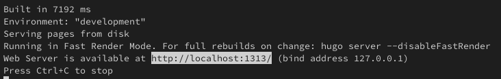
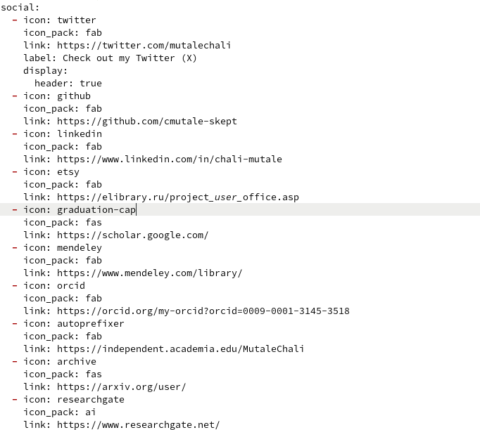
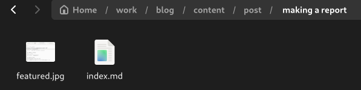
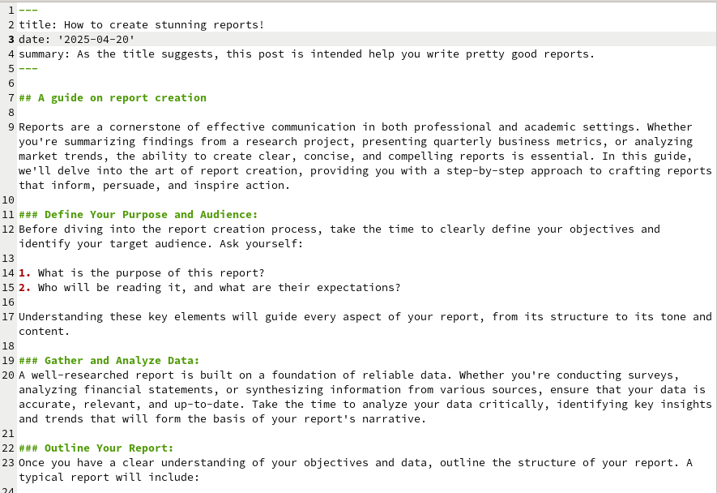

Разместить
ссылки на научные и библиометрические ресурсы
Cоздал локальный сервер:

Рис 1: Cоздание локального
сервера
Разместить
ссылки на научные и библиометрические ресурсы
В каталог ~/work/blog/content/admin редактировал файл _index.md
(добавил ссылки):

Рис 2: Редатирование файла
_index.md
Разместить
ссылки на научные и библиометрические ресурсы
Проверил выполнение работы на локальном сервере:
Рис 3: Проверка добавление
ссылок
Добавить пост
Добавить пост
каталог с файлом index.md и изображением:

Рис 4: Каталог making a
report
Добавить пост
Я написал некоторый текст в index.md и сохранила файл:

Рис 5: Создание поста по оформлению
отчета
Добавить пост
Проверил выполнение работы на локальном сервере. Затем я перенес все
изменений на в репозитории на github, чтобы изменения внести на
общедоступном сайте: